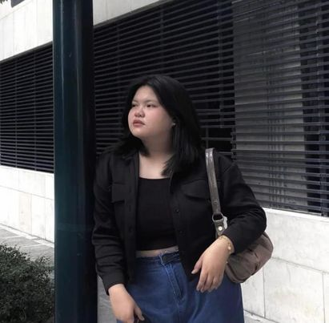

Jianna Ramos

Age: 20
Studying from: FEU Alabang
Course: BSITWMA
About Jia
Jia is a dedicated artist who finds her true passion in creating art through drawing, sketching, and digital devices. Her artistic journey is fueled by a deep love for visual expression, where every stroke of her pencil or digital pen becomes a manifestation of her creativity. Beyond her personal exploration, Jia also enjoys taking on art commissions, using her talent to bring others' visions to life. Whether she's sketching on paper or bringing her art to life on a digital canvas, Jia's commitment to her craft shines through in every piece she creates.
Infographic Highlights
2016
Started Year
30
Completed Personal Projects
20+
School related project (arts)
Skills
- Drawing and Sketching: ia has honed her ability to sketch and draw using traditional mediums such as pencil and paper. Her proficiency in drawing allows her to capture intricate details and convey emotions effectively through her artwork. With a keen eye for composition and form, Jia excels in sketching. She can quickly translate her ideas into rough sketches, exploring different concepts and refining them before finalizing her artwork.
- Digital Art: Jia is proficient in digital art techniques, utilizing software and digital devices to create stunning visuals. Her expertise in digital art allows her to leverage a wide range of tools and effects to enhance her creations and bring them to life on a digital canvas.
- Visual Expression: At the core of Jia's artistic practice is her ability to express herself visually. She has developed a unique style characterized by expressive lines, bold colors, and captivating compositions, allowing her to convey complex ideas and emotions through her art.
- Commission Work: Jia enjoys taking on art commissions, collaborating with clients to bring their visions to fruition. Her strong communication skills enable her to understand and interpret clients' requirements accurately, ensuring that the final artwork exceeds their expectations.
Favorite Quotes
"Art is the lie that enables us to realize the truth." - Pablo Picasso
Contact
Email: jia.ramos@example.com
Phone: (555) 123-4567
Social Media